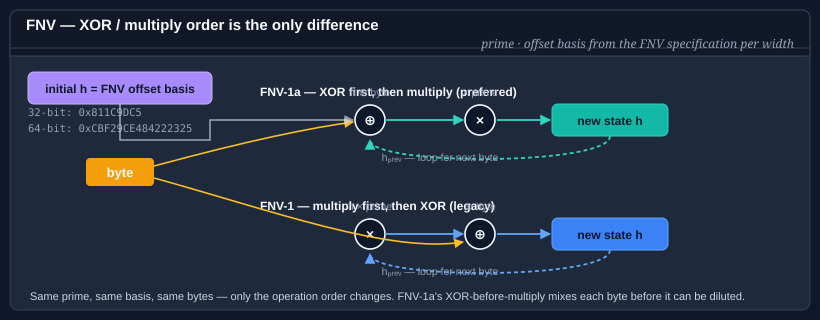

Using FNV
Fowler–Noll–Vo is a simple, very fast non-cryptographic hash: each input byte multiplies the running state by a prime and then XORs (FNV-1a) or XORs first then multiplies (FNV-1). It has excellent distribution for short strings and is the default hash in a long list of scripting languages, serializers, and hash tables.

Bodu.IO.Hashing ships the four canonical widths and variants:
| Type | Width | Variant | When to reach for it |
|---|---|---|---|
| Fnv132 | 32 bits | FNV-1 | Classic FNV-1 — legacy interop only. |
| Fnv1a32 | 32 bits | FNV-1a | General-purpose 32-bit fingerprint; the default choice at this width. |
| Fnv164 | 64 bits | FNV-1 | 64-bit FNV-1 — legacy interop only. |
| Fnv1a64 | 64 bits | FNV-1a | General-purpose 64-bit fingerprint; the default choice at this width. |
All four derive from NonCryptographicHashAlgorithm via a shared Fnv base, and all four expose the same API.
FNV-1a is preferred over FNV-1. The two variants differ only in the order of the XOR and multiplication — FNV-1a's "XOR first, multiply second" has better avalanche on short inputs and is what most reference implementations choose today. Use FNV-1 only when you need bit-for-bit compatibility with an existing system.
Pattern 1 — compute a digest in one call
using System.Text;
using Bodu.IO.Hashing;
byte[] data = Encoding.UTF8.GetBytes("the quick brown fox");
var fnv = new Fnv1a64();
fnv.Append(data);
byte[] digest = fnv.GetCurrentHash();
string hex = Convert.ToHexString(digest); // 8 bytes, 16 hex characters
Substitute Fnv1a32, Fnv164, or Fnv132 as needed.
Pattern 2 — fingerprint a short string for a hash table
The canonical use of FNV is as a hash-table function. The 32-bit width is usually enough for in-process tables; reach for 64 bits when you want to keep the collision probability vanishingly small at a few million entries.
using System.Text;
using Bodu.IO.Hashing;
int FingerprintFor(string key)
{
var fnv = new Fnv1a32();
fnv.Append(Encoding.UTF8.GetBytes(key));
return BitConverter.ToInt32(fnv.GetCurrentHash());
}
FNV is not keyed. An adversary who can choose inputs can construct collisions trivially — do not use it on data that crosses a trust boundary. For that case, use SipHash64; see the cryptography hashing guide.
Pattern 3 — AlgorithmName for logs and diagnostics
Each FNV type exposes an AlgorithmName string that captures the variant and width, which is handy for logging or on-wire format headers:
var fnv = new Fnv1a64();
Console.WriteLine(fnv.AlgorithmName); // "FNV-1a-64"
Pattern 4 — streaming a file
using Bodu.IO.Hashing;
var fnv = new Fnv1a64();
using (FileStream fs = File.OpenRead("archive.bin"))
{
byte[] buffer = new byte[64 * 1024];
int read;
while ((read = fs.Read(buffer, 0, buffer.Length)) > 0)
{
fnv.Append(buffer.AsSpan(0, read));
}
}
byte[] fingerprint = fnv.GetCurrentHash();
The update is byte-by-byte internally, so any chunking works — including buffers that cross record boundaries.
Pattern 5 — Append / GetCurrentHash / Reset
using Bodu.IO.Hashing;
var fnv = new Fnv1a64();
fnv.Append(header);
fnv.Append(body);
byte[] mid = fnv.GetCurrentHash(); // snapshot, non-destructive
fnv.Append(trailer);
byte[] full = fnv.GetCurrentHash();
fnv.Reset(); // back to FNV offset basis
Reset restores the algorithm's published offset basis (0x811C9DC5 for 32-bit, 0xCBF29CE484222325 for 64-bit). You cannot change the offset basis — if you need a different seed, pre-mix the seed bytes into the input before the first Append.
FNV vs the other non-cryptographic hashes in this package
- vs Adler32 — FNV distributes shorter inputs more evenly; Adler is marginally faster on long buffers and is the checksum specified by zlib / PNG.
- vs CityHash64 — CityHash is substantially faster on long inputs (SIMD-friendly by design) and distributes better on both short and long data. FNV wins on code simplicity and on determinism across languages/libraries.
- vs Crc — CRC is specified for wire formats and has provably good burst-error detection; FNV is a better default for in-memory fingerprinting where you control both ends.
- vs SipHash64 — SipHash is keyed and resists adversarial collisions; FNV does not. Pick SipHash whenever untrusted input can reach the hash function.
Where to go next
- Using CityHash — the SIMD-friendly modern alternative.
- Using Adler — twin-accumulator checksum with the same
NonCryptographicHashAlgorithmshape. - Cryptography hashing guide — when FNV is not enough.
- Bodu.IO.Hashing namespace page — key types and design notes.
- Hashing & Cryptography guides — every guide in this topic, across Bodu.IO.Hashing and Bodu.Security.Cryptography.